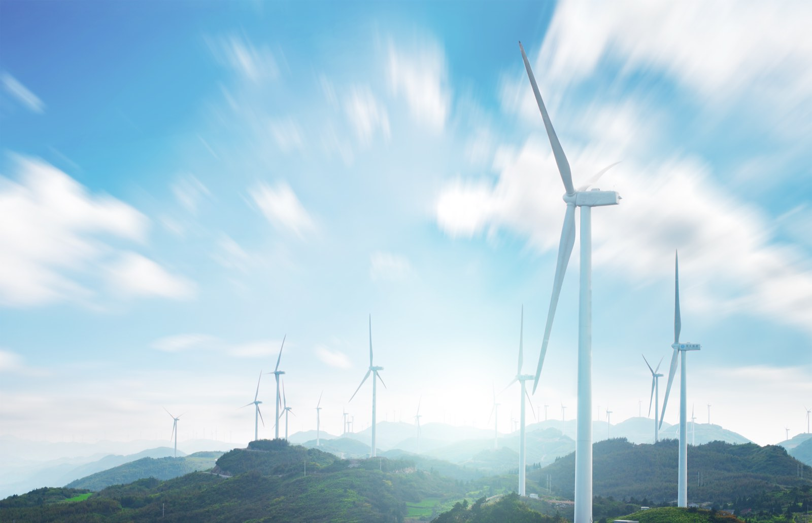
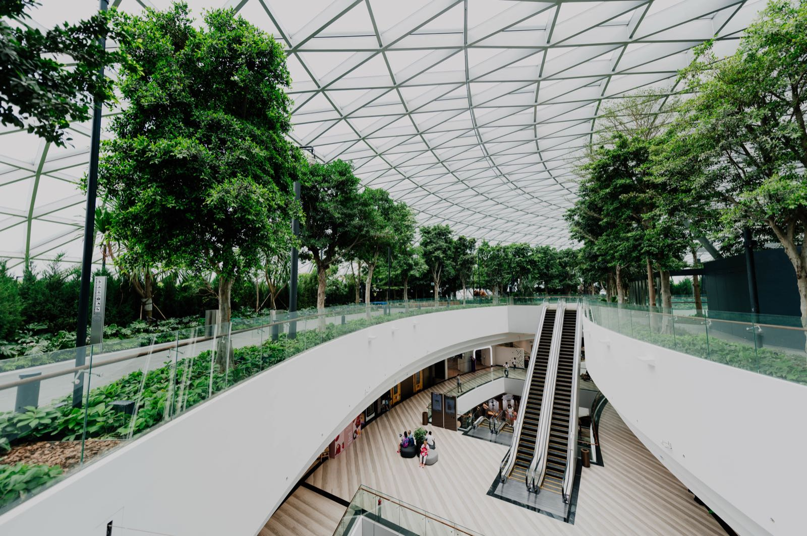

03 ─ Regional Energy
區域能源整合
當再生能源佔比越來越高，電網缺的不是電，是把電放在對的時間的能力。
Overview
太陽能的產出高峰出現在中午，用電高峰卻常落在傍晚。這個時間差過去是個問題，現在則是一門可以經營的生意——前提是您有能力承接、儲存，並在正確的時間釋放。
我們以 MW 級儲能系統為核心，結合需量反應與虛擬電廠調度，讓同一座電池同時參與電力交易平台的輔助服務、尖離峰套利與廠內需量管理。
儲能案場從饋線評估、商模試算到併網測試單一窗口
同時規劃多重收益來源，降低單一市場價格波動的風險
可整合既有光電案場，形成區域型虛擬電廠
符合台電電力交易平台的合格交易者技術要求
What We Do
服務內容
Specifications
儲能系統
儲能系統
規格
以下為單站標準配置範圍，實際規格依饋線容量、場域條件與目標商模調整。
單站系統規模2 – 20MW
儲能電量4 – 40MWh
電池技術LFP 磷酸鋰鐵
併網電壓11.4 / 22.8kV
調頻反應時間< 0.5秒
循環壽命6,000+cycles
系統可用率≥ 98%
消防規範NFPA 855 / CNS
設計壽命20年
Process
服務流程
-
01
饋線與場域評估
查詢併網點可用容量、確認用地法規與消防間距，初步判斷可行規模。
-
02
商業模式試算
依輔助服務歷史價格、廠區負載曲線與電價結構，試算不同運轉策略下的收益與回收期。
-
03
系統設計與建置
完成電氣單線圖、保護協調、消防與 EMS 設計，並執行土建與設備安裝。
-
04
併網測試與資格取得
執行併網測試與性能驗證，協助完成電力交易平台合格交易者登錄。
-
05
調度營運與優化
依市場訊號執行日常投標與調度，定期檢討運轉策略與電池健康度（SOH）。
Good Fit
這項服務適合這些對象
- 工業區與科學園區
- 高用電量製造廠
- 既有光電案場加裝儲能

台電饋線容量充裕之土地
需提升供電韌性的關鍵設施- 社區型微電網示範場域
不確定自己的條件適不適合？把現況資料給我們， 一次免費評估就能得到答案。